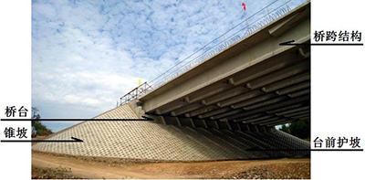

第二节 桥梁结构体系与基本组成
第二节 桥梁结构体系与基本组成
[A1.8] 桥梁是由桥跨结构、桥墩、桥台及防护设施等部分组成。通常人们习惯地以支座为界，支座以上的桥跨结构（含桥面系构造）称为桥梁上部结构，支座以下的桥墩、桥台（包含基础）称为桥梁下部结构；也有以基础为界进行划分的，基础以上的桥跨结构（含桥面系）、桥墩和桥台（不包含基础）称为桥梁上部结构，基础工程称为桥梁下部结构；现行公路桥梁相关规范（如《公路装配式混凝土桥梁设计规范》（JTG/T 3365-05）、《公路桥梁加固设计规范》（JTG/T J22）、《公路桥涵养护规范》（JTG 5120）等）将支座以上（含支座）定义为上部结构。本教材为便于读者查阅相关规范、其他参考书和资料，以支座为界进行划分，如（图1-1-5）所示。

图1-1-5 桥梁基本组成
[A1.9] 桥跨结构是在道路中断时跨越障碍的主要承载结构，如图1-1-5所示，包括桥面系构造、主梁、拱、悬索等，其作用是承受桥上的车辆和行人。
[A1.10] 桥面系构造（也称作桥面系）是指能满足使用荷载在桥面上安全、有效和顺畅地通过的构造设施。公路桥梁的桥面系构造包含：桥面铺装、伸缩缝、人行道（或安全带）、栏杆、路缘石、防（排）水设施、灯柱照明设备等。
[A1.11] 桥墩是多孔桥梁中，处于相邻桥孔之间支承上部结构并将荷载传递到基础（再由基础传递至地基）的构造物，如图1-1-5所示。
[A1.12] 桥台是在桥孔尽端与路堤连接处、支承桥梁上部结构并将荷载传到基础（再由基础传递至地基）的构造物，如图1-1-5所示。桥台一般具有支承和挡土的功能，抵御路堤土压力，防止路堤填土的滑坡和坍塌，使桥梁和路堤连接匀顺，行车平稳。
[A1.13] 基础是桥墩和桥台的组成部分，承受桥墩（台）传来的全部荷载，并将其传至地基的结构，是确保桥梁能安全使用的关键。
[A1.14] 支座是设置在桥梁墩台上、支承桥跨结构的传力与连接装置，如图1-1-5所示。
[A1.15] 锥体护坡又称锥坡（图1-1-5），是桥梁的防护设施。当桥台布置不能完全挡土或采用埋置式、桩式、柱式桥（涵）台时，为了保护桥（涵）两端路堤土坡稳定、防止冲刷，在桥台两侧路堤与桥台衔接处设置的锥形护坡。锥坡的横桥向坡度与路堤边坡一致，顺桥向坡度应根据填土高度、土质情况，结合坡前冲刷和铺砌情况而定。跨越水流的桥梁宜采用浆砌片石铺砌，大、中桥的铺砌高度应高出设计水位不小于50cm，小桥应高出壅水位25 cm。
[A1.16] 附属设施是在桥梁建筑工程中，除了上部结构、下部结构、支座等主体工程外，根据需要修筑的护岸、河床铺砌、导流结构物等。
[A1.17] 目前，桥梁种类繁多，都是在长期生产活动中，通过反复实践和不断总结逐步发展起来的。为了对各类桥梁结构有个总体认识，下面将从桥梁结构的力学体系、建桥材料及用途等方面进行类别划分，并介绍相应的基本组成。
[A1.18] 公路桥梁按桥跨结构的力学体系划分，有梁桥、拱桥、斜拉桥、悬索桥、组合体系桥；按桥跨结构的建筑材料划分，有钢筋混凝土及预应力混凝土桥、钢桥、钢-混凝土组合桥、钢管混凝土桥、圬工桥（包括混凝土桥、石桥、砖桥）、木桥等；按桥梁工程规模划分，有特大桥、大桥、中桥、小桥和涵洞，如表1-1-1所示；按桥梁平面布置分类，有直桥（正桥）、斜桥、弯桥（曲线梁桥）、坡桥等；按行车道设在桥跨结构的上、中、下部，可分为上承式桥、中承式桥、下承式桥；按主梁的截面构造形式分为T形梁桥、箱梁桥等。本教材将以桥跨结构的力学体系为主线，详细介绍每一类桥梁的结构特征、主要类型和基本组成。
| 桥涵分类 | 多孔跨径总长L(m) | 单孔跨径总长LK(m) |
| 特大桥 | L＞1000 | LK＞150 |
| 大桥 | 100≤L＜1000 | 40≤LK＜150 |
| 中桥 | 30≤L＜100 | 20≤LK＜40 |
| 小桥 | 8≤L＜30 | 5≤LK＜20 |
| 涵洞 | — | LK＜5 |
注：1.桥梁总长和单孔跨径都是桥梁建设规模的标志，表1-1-1为我国现行《公路工程技术标准》（JTG B01）规定的分类标准。
2.单孔跨径系指标准跨径。
3.多孔跨径总长系指桥梁总长。
- 结构特征与主要类型
[A1.19] 梁桥是主要承重结构用梁来承受弯矩和剪力的桥梁。当梁通过支座支承在下部结构上时，在竖向荷载作用下，支座处不产生水平反力[图1-1-6a）、b）]。由于外力（恒载和活载）的作用方向与承重结构的轴线接近垂直，梁内产生的弯矩很大，通常采用抗弯能力强的建筑材料（钢筋混凝土及预应力混凝土、钢等）来建造，公路应用最广的梁桥是钢筋混凝土及预应力混凝土梁桥。通常在跨径小于20m时采用预制装配式的钢筋混凝土简支梁桥，这种梁桥结构简单、施工方便、对地基承载能力的要求也不高；当跨径在20～50 m时，采用装配式预应力混凝土简支梁桥；跨径超过50 m后，为了达到经济、省料的目的，采用预应力混凝土连续梁桥[图1-1-6c）]。对于大跨径及承受很大荷载的特大跨径桥梁，可采用预应力混凝土材料、钢-混凝土组合材料，也可采用钢材[图1-1-6d）]。
图1-1-6 梁桥
[A1.20] 当梁与下部结构（立柱，或竖墙）整体结合在一起时形成刚架结构[图1-1-7a）]。在竖向荷载作用下，梁部主要承受弯矩，梁和柱的连接处承受负弯矩，在柱脚处有水平反力[图1-1-7b）]，该水平反力使梁部承受压力。因此，在相同荷载作用下，相同跨径的刚架桥跨中正弯矩要比简支梁桥的小，从而使得刚架桥跨中的建筑高度小于同跨径简支梁桥。在城市中，当遇到路线立体交叉或需跨越通航江河时，采用刚架桥能尽量降低路线高程以改善纵坡，并能减少路堤土方量。T形刚构桥是一种梁墩固结、跨中采用剪力铰或简支挂梁组合而成的具有悬臂受力特点的桥梁[图1-1-7c）]，由于混凝土的徐变效应，使得预应力混凝土T形刚构桥悬臂端产生不可恢复的永久下挠变形，在跨中剪力铰或跨内简支挂梁结合处桥面易开裂，变形较大时还会产生跳车现象，因此，该桥型已不被新建桥梁采用。为了克服T形刚构桥悬臂端下挠变形的缺陷，结合连续梁桥与T形刚构桥的优点，发展起来了预应力混凝土连续刚构桥[图1-1-7d）]，但多跨连续刚构桥属高次超静定结构，因此，连续跨数不宜太多。在设计中一般应减小桥墩的抗推刚度，否则在结构内将引起较大的附加内力。对于较长的桥，为了降低这种附加内力，往往在桥的两端边墩上设置活动支座，此时结构形式变成连续刚构-连续梁桥。有时修建斜腿式的刚构桥往往经济合理、造型轻巧美观，如图1-1-7e）所示。

图1-1-7 刚架桥与刚构桥
- 基本组成
[A1.21] 梁桥是由梁（桥跨结构）、支座（刚架桥无支座、连续刚构桥中间墩无支座）、桥墩、桥台、桥面系构造及附属工程等组成，如图1-1-8所示为简支梁桥的基本组成。

a） 立面
 b）示例一
b）示例一
c）示例二
图1-1-8 简支梁桥的基本组成
[A1.22] 主桥：对于规模较大的桥梁，通常把跨越主要障碍物（如大江、大河、深谷等）的桥梁称为主桥。由于通航等原因，主桥常需有一定的高度与跨径，一般采用跨越能力较大的结构体系，是整个桥梁工程的重点，如图1-1-8a）所示。
[A1.23] 引桥：将主桥与路堤以合理的坡度连接起来的这一部分桥梁称作引桥，如图1-1-8a）所示。引桥与引道分界点的高度取决于地质条件和经济分析。
[A1.24] 标准跨径：梁式桥和板式桥是指相邻两桥墩中线之间桥梁中心线长度，或桥墩中线与桥台背墙前缘之间桥梁中心线长度[图1-1-8a）中的LK]；拱桥和涵洞为净跨径（如图1-1-9中的l0 ）。标准设计或新建桥涵，当跨径小于或等于50 m时，宜采用标准跨径，直接套用公路桥涵通用标准设计图，以加速设计进程并便于施工。中国交通运输部颁布的现行《公路工程技术标准》（JTG B01）对桥涵标准跨径规定为：0.75 m、1.0 m、1.25 m、1.5 m、2.0 m、2.5 m、3.0 m、4.0 m、5.0 m、6.0 m、8.0 m、10 m、13 m、16 m、20 m、25 m、30 m、35 m、40 m、45 m、50 m。当桥梁设计跨径未能采用标准跨径时，则不能套用公路桥涵通用标准设计图，需进行单独设计。
[A1.25] 计算跨径：对于有支座的桥梁，为桥跨结构的相邻两支座中心之间的距离（如图1-1-8a）中的l）；无支座的桥梁，为支承中心之间的距离。
[A1.26] 净跨径：设计洪水位线或通航水位线上相邻两桥墩（或桥台）间的水平距离[如图1-1-8a）中的l0及l0′]。
[A1.27] 总跨径：多孔桥梁中各孔净跨径的总和。
[A1.28] 桥梁全长：有桥台的桥梁为两岸桥台侧墙或八字墙尾端间的距离[如图1-1-8a）中的L]；无桥台的桥梁为桥面系行车道长度。
[A1.29] 桥梁总长：梁桥和板桥为两桥台背墙前缘之间的距离[如图1-1-8a）中的L1]，即多孔标准跨径的总长；拱桥为两端桥台内起拱线间的距离；其他结构体系桥梁为桥面系行车道长度。
[A1.30] 桥梁高度：简称桥高，是指桥面与低水位（有水河流）之间的高差[如图1-1-8a）中的H1]；或桥面至桥下路线路面（跨线桥）之间的距离；或桥面至桥下沟底（旱桥）之间的距离。
[A1.31] 桥梁建筑高度：桥面至桥跨结构最下缘之间的竖向距离（如图1-1-8a）中的h及h′，图1-1-8中的h），不仅与桥梁结构体系和跨径的大小有关，而且还随行车部分在桥上布置的高度位置而异。公路（或铁路）定线中所确定的桥面（或轨顶）高程，与通航净空顶部高程之差，又称为建筑限界高度。显然，桥梁的建筑高度不得大于建筑限界高度，否则就不能保证桥下的通航要求。
[A1.32] 为保证水流、船只、流筏、流木、其他水上漂流物、泥石流、车辆、行人等安全通过所保持的桥下最小空间。是设计水位或计算通航水位至桥跨结构最下缘之间的距离[如图1-1-8a）中的H]。
[A1.33] 桥面净空：又称桥面建筑限界。为保证列车、车辆、行人等安全通行，在桥面一定高度和宽度范围内不容许有任何建筑物或障碍物的空间限界。
- 结构特征与主要类型
[A1.34] 拱桥的主要承重结构是拱圈或拱肋（图1-1-9）），结构在竖向荷载作用下，桥墩或桥台承受水平推力[图1-1-9b）]，这种水平推力将显著抵消荷载在拱圈内产生的弯矩作用，并使拱圈主要承受压力。因此，与同跨径的梁相比，拱的弯矩和变形要小得多；采用同样材料建桥时，拱桥的跨越能力比梁桥大得多。由于拱桥的承重结构以受压为主，通常可用抗压能力强的圬工材料（如砖、石、混凝土等）、钢筋混凝土等来建造，对于大跨径拱桥，可采用钢材、钢管混凝土等材料建造。
[A1.35] 采用圬工材料建造的拱桥称为圬工拱桥。这种拱桥具有取材容易、构造简单、技术易掌握、承载潜力大、耐久性好、养护费用少等优点。目前世界上跨度最大的石拱桥是我国于2000年建成的山西晋城丹河大桥，跨径达146 m。
[A1.36] 以钢筋混凝土材料建造的拱桥称为钢筋混凝土拱桥。相对于圬工拱桥，钢筋混凝土拱桥自重小、跨越能力大，充分利用了混凝土与钢材的受力优势。钢筋混凝土拱桥也能通过选择合理的体系、突出结构线条，达到良好的建筑艺术效果。目前世界上跨度最大的钢筋混凝土拱桥是1997年建成的我国重庆万州长江大桥，跨径达420 m。
[A1.37] 钢拱桥是以钢材为主要建筑材料的拱桥。钢材的优良性能使钢拱桥能够适应更大跨径的要求，2003年建成的上海卢浦大桥是建成时世界最大跨径钢拱桥，主跨达550 m。
[A1.38] 钢管混凝土拱桥是主拱圈采用钢管内灌注混凝土，由钢管-混凝土构件共同受力的拱桥。钢管的套箍作用使管内混凝土在轴压荷载作用下呈三向受压的受力状态，大大提高了混凝土的抗压强度、塑性和韧性，延缓混凝土受压时的纵向开裂，可提高拱肋的力学性能。2013年建成的泸州波司登大桥，是建成时世界上跨度最大的钢管混凝土拱桥，跨径达530 m。
[A1.39] 拱桥的主要缺点表现为：一般拱桥桥跨结构自重较大，且存在水平推力，使墩台与基础结构工程量增加，对地质条件要求高；在连续多跨的大、中型结构中，为防止一跨破坏影响全桥安全，需要采取复杂的结构措施，或应设置抵抗单向水平推力的桥墩，增加了造价；在满足桥下净空要求时，上承式拱桥的曲线底面将增加桥面高程，在城市立交工程及平原地区时，将增加接线的工程量或桥面纵坡，增大了造价。此外，拱桥的施工一般要比梁桥复杂些。
[A1.40] 在地质条件较好的山区，中、小跨径圬工拱桥是最具竞争力的；在地质条件较差或平原地区，也常选择无推力拱的方案；在跨径100～600 m范围的大跨径桥梁中，拱桥都有相当大的竞争优势。
图1-1-9 拱桥
- 基本组成
[A1.41] 拱桥是由桥跨结构主拱圈（或拱肋）、拱上建筑（或拱下悬吊结构）、桥墩、桥台、桥面系构造及附属工程等组成，如图1-1-10）所示为实腹式无铰拱桥的基本组成，图1-1-10b））所示为空腹式无铰拱桥实桥示例（赵州桥）。

a） 实腹式拱桥的主要组成部分

b） 空腹式无铰拱桥示例（赵州桥）
图1-1-10 上承式无铰拱桥的基本组成
1—主拱圈；2—拱顶；3—拱脚；4—拱轴线；5—拱腹；6—拱背；7—起拱线；8—桥台；9—桥台基础；10—锥坡；11—拱上建筑；12—栏杆；l0—净跨径；l—计算跨径；f0—净拱矢；f—计算矢高
[A1.42] 拱圈也称为主拱圈或主拱，是支承于墩、台之间，用以承受桥上全部荷载的弧形构件。在横桥向有整体式和分离式两种构造形式。整体式拱圈为上承式拱桥，一般情况下车辆都无法直接在拱圈弧面上行驶，所以在桥面系与拱圈之间需要有传递压力的构件或填充物，以便车辆能在平顺的桥面上行驶。桥面系和这些传力构件或填充物统称为拱上结构或拱上建筑。桥面系包括行车道、人行道及两侧的栏杆或砌筑在矮墙（又称雉墙）等构造，如图1-1-10a））所示。分离式拱圈通常由两条或两条以上的拱肋组成，在桥面系与拱肋之间需要由吊杆[下承式拱桥，如图1-1-9c））所示]、或吊杆和立柱（中承式拱桥）所示]传递竖向力。对于拱脚处设铰的有铰拱桥，拱圈与墩（台）帽间还设置了能传递荷载、又允许结构变形的拱铰构造。
[A1.43] 拱轴线：拱圈各截面重心（或形心）的连线。拱桥常用的拱轴线有圆弧线、抛物线、悬链线等。拱轴线线形直接影响拱圈各截面内力的分布，通常要求在竖向荷载作用下，拱轴线尽量接近恒载压力线（拱圈各截面上轴向压力作用点连线），使拱圈各截面内只受轴力而没有弯矩，此时的拱轴线称作合理拱轴线。
[A1.44] 拱顶：指对称拱的拱圈跨中截面，不对称拱的拱圈最高处截面。
[A1.45] 拱脚：是拱圈与墩台或其他支承结构连接处的拱圈截面。拱的自身重量和拱上承受的其他荷载都是通过拱脚传递给墩、台或其他支承结构。拱脚的支承方式必须与拱桥设计图式一致，如为两铰拱或三铰拱，则拱脚采用铰支，如为无铰拱则拱脚固结。
[A1.46] 拱腹：拱圈的下缘曲面，即拱圈的向下凹面。在上承式拱桥中，拱腹以下的空间即为桥下净空范围。
[A1.47] 拱背：拱圈的上缘曲面，即拱圈的向上凸面。对于实腹拱桥，拱背上支承侧墙和填料；对于空腹拱桥，拱背上筑有横墙或立柱。
[A1.48] 起拱线：拱圈拱脚截面的下缘线，即拱脚截面与拱腹相交的直线。
[A1.49] 拱上建筑：又称拱上结构，上承式拱桥桥跨结构中主拱圈以上结构的总称。包括桥面系和向主拱圈传递荷载的构件或填充物。拱桥桥面系包括行车道、人行道及两侧的栏杆或砌筑的矮墙（又称雉墙）等构造。
[A1.50] 拱肩：上承式拱桥拱圈两侧拱背以上、桥面系以下的空间，即拱上建筑的腹部。有填料的为实肩拱（或实腹式拱），具有构架体系的为敞肩拱（或空腹式拱）。
[A1.51] 拱矢f：又称拱高，或矢高，或计算矢高。拱顶截面至拱脚截面在拱轴线上的垂直距离。
[A1.52] 净拱矢f0：又称净矢高。拱顶截面下缘至相邻两拱脚截面下缘最低点之连线的垂直距离。
[A1.53] 计算跨径l：两拱脚截面之间拱轴线上的水平距离，图1-1-10a）中的l 。
[A1.54] 净跨径l0：两拱脚截面间拱腹面上的水平距离（或两拱脚起拱线间的水平距离），如图1-1-10a）中的l0。
[A1.55] 矢跨比（f /l）：是拱桥中拱圈（或拱肋）的计算矢高f与计算跨径l之比，也称拱矢度，是反映拱桥受力特性的一个重要指标。
- 结构特征与主要类型
[A1.56] 斜拉桥（又称作斜张桥）是用锚在桥塔上的多根张紧的斜向钢缆索吊住主梁的缆索承重桥。在竖向荷载作用下，主梁受弯（受压）、桥塔受压、斜拉索受拉。因高强度钢缆索对主梁起着弹性支承作用，使主梁像多孔小跨径弹性支承连续梁一样工作，故内力小，建筑高度低，自重轻，施工方便，并能显著加大跨越能力。按照主梁建筑材料可分为混凝土斜拉桥、钢斜拉桥、钢-混凝土结合梁斜拉桥以及主跨采用钢梁、边跨采用预应力混凝土梁的组合梁斜拉桥。按照塔、梁、墩的相互结合方式，斜拉桥的结构体系可划分为漂浮体系、支承体系（包括半漂浮体系）、塔梁固结体系和刚构体系，这部分内容将在第四篇中进行介绍，这里不再详述。
- 基本组成
[A1.57] 斜拉桥是由主梁、斜拉索、索塔、墩台、桥面系构造及附属工程等组成，如图1-1-11）所示为斜拉桥的基本组成。
图1-1-11 斜拉桥的基本组成
l—跨径；H—索塔高度；h—建筑高度；d—斜拉索梁上间距；a—斜拉索倾斜角度
[A1.58] 斜拉索：是锚在索塔上并吊住主梁的钢索，由钢绞线或钢丝束组成。
[A1.59] 索塔：用以支承斜拉索并承受拉索传递的竖直分力和水平分力的结构。
[A1.60] 主梁：提供桥面并直接承受竖向活载（汽车荷载，列车荷载等）、同时承受拉索传递的竖直分力和水平分力的梁体结构。
[A1.61] 跨径l：索塔中心之间的水平距离，或索塔中心至桥台背墙之间的距离。
[A1.62] 索塔高度H：索塔顶端（不含塔顶装饰构造部分）至桥面的垂直距离。
- 结构特征与主要类型
[A1.63] 悬索桥（又称作吊桥）采用悬挂在两边桥塔上的强大缆索作为主要承重结构。在竖向荷载作用下，梁体结构上的荷载通过吊索传递至缆索，使缆索承受很大的拉力，通常需要在两岸桥台的后方修筑非常巨大的锚碇结构来锚固缆索。悬索桥也是具有水平反力（拉力）的结构。现代悬索桥广泛采用高强度钢丝编制的钢缆，以充分发挥其优异的抗拉性能，因此结构自重较小，能以较小的建筑高度跨越其他任何桥型无与伦比的特大跨径。加劲梁应具有良好的空气导流特性和较高的抗扭刚度，因此，大跨径悬索桥多采用钢加劲梁，中、小跨径悬索桥可选择较经济的混凝土加劲梁。
[A1.64] 在不宜修建锚碇的情况下，可建造自锚式悬索桥（图1-1-12）。自锚式悬索桥是一种不设重力式地锚，而以加劲梁的梁端锚固主缆，承受主缆端部的水平与竖向分力的悬索桥体系。自锚式悬索桥也是以承受拉力的缆索作为主要承重构件，与常规地锚式悬索桥的区别在于不设地锚、加劲梁承受主缆水平分力而造成主梁存在较大的轴向压力，同时具备常规地锚式悬索桥的各项优点。
图1-1-12 自锚式悬索桥示例（西安灞河元朔大桥）
- 基本组成
[A1.65] 悬索桥是由缆索（桥跨结构）、索塔、锚碇、吊索、加劲梁、桥台、桥面系构造及附属工程等组成，如图1-1-13所示为悬索桥的基本组成。
图1-1-13
l——跨径；f——缆索垂度；d——吊索间距；V——竖向力；H——水平力；
[A1.66] 缆索：又称主缆，是悬索桥的主要承重结构，以索塔及支墩为支承、两端锚固于锚碇，并通过吊索悬挂加劲梁的缆索结构（图1-1-13）。主缆是由若干根索股组成，每一根索股是由高强镀锌平行钢丝预制（编制）成的钢丝束股。
[A1.67] 索塔：用以支承缆索并将荷载通过基础传递给地基的结构。同时在风和地震荷载作用下，对全桥结构的总体稳定提供安全保障。
[A1.68] 锚碇：用来锚固缆索索股，承受主缆拉力，支承于地基上或嵌（锚）固于岩体中的结构。
[A1.69] 加劲梁：提供桥面并直接承受竖向活载（汽车荷载，列车荷载等）的梁体结构。必须具有足够的抗扭转性能以保持在风荷载作用下的气动稳定性。
[A1.70] 吊索：又称吊杆，是连接缆索与加劲梁的构件。
[A1.71] 鞍座：为缆索提供支承并使缆索平顺地改变方向的构件。
[A1.72] 跨径l：缆索支承中心之间的水平距离。
[A1.73] 缆索垂度f：缆索支承点连线至缆索最低点的垂直距离。
[A1.74] 垂跨比（f/l）：是悬索桥中悬索垂度f与主跨跨径l之比，是反映悬索桥受力特性的一个重要指标。
[75] 根据结构的受力特点，由几个不同体系的结构组合而成的桥梁称为组合体系桥。组合体系桥的种类很多，但究其实质不外乎利用梁、拱、吊索三者的不同组合形成新的结构。组合体系桥梁一般都可以用钢筋混凝土来建造，对于大跨径桥梁以采用预应力混凝土或钢材修建为宜。这种桥梁的施工工艺比较复杂。
- 拱 —— 梁（系杆）组合体系桥
[76] 拱——梁（系杆）组合体系桥中有两种不同的结构形式：第一种结构由拱肋、纵梁、吊杆、横梁与桥面板等组成（图1-1-14），拱和纵梁都是主要承重结构，两者互相配合共同受力，拱的水平推力由纵梁承担，纵梁除了受弯还受拉；第二种结构则由拱肋、系杆、吊杆、横梁和桥面板等组成，桥面结构通过横梁和吊杆悬吊在拱肋上，拱的水平推力由与桥面结构分离的系杆承担，系杆承受拉力。这种组合体系桥是简支在墩台上，对墩台没有推力作用，为外部静定、内部超静定结构，墩台位移对桥跨结构不产生附加内力，因此，对地基承载力的要求与一般简支梁桥一样，但比一般简支梁桥的跨越能力更大。
[77] 拱——梁（系杆）组合体系桥也称作无推力组合体系拱桥，通常采用钢筋混凝土或钢材建造，第一种结构的纵梁宜用预应力混凝土，以免开裂；第二种结构的系杆通常采用钢绞线或平行钢丝束。拱圈材料目前采用比较多的是钢管混凝土。
图1-1-14 拱-梁组合体系桥
- 钢桁架拱桥
[78] 钢桁架拱桥的上部结构主要由桁式拱肋、吊杆、（系杆、）桥面结构等组成（图1-1-15）。桁式拱肋由承受轴力的杆件组成，能够充分发挥材料的特性，采用较小的材料截面取得较大的纵、横向抗弯刚度。与箱形拱肋相比，桁式拱肋减轻了自重，使拱桥具有更强的跨越能力，而且桁式拱肋具有每个节间杆件能够灵活地改变截面和钢种的特点，展现了良好的经济性能。

图1-1-15 钢桁架拱桥（广东珠海横琴二桥）
- 斜拉-悬索组合桥
[79] 斜拉-悬索组合桥（图1-1-16）是斜拉桥体系与悬索桥体系相互协作的一种组合体系桥，在结构的不同部分呈现出相应斜拉桥和悬索桥的受力特点。与悬索桥相比，可以减小锚碇规模和工程量，提高体系刚度和抗风能力；与斜拉桥相比，可以减小索塔高度和主梁轴力，减小施工最大悬臂，增加抗风稳定性。

图1-1-16 斜拉-悬索组合桥示意
[80] 涵洞是横穿并埋设在路堤中供排泄洪水（排洪涵）、灌溉道路两侧农田（灌溉涵）或作为通道（立交涵）的小型构筑物。为了区别于桥梁，现行《通规》（JTG D60）中规定：①凡单孔标准跨径小于5 m的，均称为涵洞；②管涵及箱涵不论管径或跨径大小、孔数多少，均称为涵洞。涵洞的构造由主体工程（洞口、洞身和基础三个部分）和附属工程组成。洞口在洞身两侧，起连接洞身与路基边坡、保护洞身防止边坡受水流侵蚀而坍塌、使水流正常通过涵洞等作用，位于上游的称为入口，位于下游的称为出口。洞身是涵洞的主要部分，其作用应满足排水[（图1-1-17a）]、灌溉[（图1-1-17b）]或交通[（图1-1-17c）]的要求，并承受路基填土及传来的车辆荷载的压力。基础是保证涵洞整体结构的稳定与传递荷载于地基。附属工程包括边坡防护、锥体护坡、河床铺砌等。涵洞按洞身截面形状可分为管涵（圆形）、箱涵（矩形）、拱涵（拱形）；按水力性能可分为压力式涵洞、无压力式涵洞、半压力式涵洞和倒虹吸等。涵洞长度是按出、入口端洞身顶部帽石外缘之间距离计算的，如（图1-1-18）所示。
 a）
a）
 b）
b）
 c）
c）
图1-1-17 涵洞示例
图1-1-18 涵洞中心纵断面示意图
[81] [拓展小知识1-1] 公路桥梁跨径与铁路桥梁跨度
对于简支梁桥来讲，公路桥梁与铁路桥梁在有些常用术语上是有区别的。例如，桥跨结构跨越能力的大小，公路桥梁用“标准跨径”表示，梁的长度（为标准跨径长度减去伸缩缝宽度）小于标准跨径长度而大于计算跨径长度；铁路桥梁则用“跨度”表示，跨度是指桥跨结构的相邻两支座中心之间的距离（相当于公路桥梁的计算跨径），因此，梁的长度大于跨度。例如：同样是20 m简支T梁，公路桥梁的20 m简支T梁标准跨径是20 m，计算跨径是19.40 m，梁长是19.96 m；而普通铁路桥梁的20 m简支T梁跨度是20 m，计算跨径是20 m，梁长是20.60 m。具体可参考现行《通规》（JTG D60）和《铁路桥涵设计基本规范》（Q/CR 9300）。
[82] [拓展小知识1-2] 涵洞
公路涵洞是指①凡单孔标准跨径小于5 m的，均称为涵洞；②管涵及箱涵不论管径或跨径大小、孔数多少，均称为涵洞。铁路涵洞是指孔径（涵洞两边墙的内侧尺寸（或内径））小于等于6 m的，均为涵洞。城市道路桥梁，单孔跨径小于5 m、多孔跨径总长小于8 m的，通常称为通道，用于排水的称为排水通道，用于立交的称为立交通道。
[83] [学习提示]
- 公路桥梁长度与涵洞长度有何区别？
- 桥梁包括哪些组成部分？
- 试简述桥梁的分类方法。
- 结合桥梁基本组成图式解释桥梁工程常用名词和术语，并能在任意一类桥型立面图中标出。
- 某公路桥梁为2跨45m预应力混凝土简支梁桥，归类为中桥还是大桥？福建泉州洛阳桥，现存47孔净跨8m（石板长约11m）石板桥，如何归类？
- 标出图1-1-19中控制桥面高程的桥跨结构截面处桥梁建筑高度？
[84] [思考与练习]
- 公路桥梁长度与涵洞长度有何区别？
- 桥梁包括哪些组成部分？
- 试简述桥梁的分类方法。
- 结合桥梁基本组成图式解释桥梁工程常用名词和术语，并能在任意一类桥型立面图中标出。
- 某公路桥梁为2跨45m预应力混凝土简支梁桥，归类为中桥还是大桥？福建泉州洛阳桥，现存47孔净跨8m（石板长约11m）石板桥，如何归类？
- 标出图1-1-19中控制桥面高程的桥跨结构截面处桥梁建筑高度？
图1-1-19 桥下净空和桥梁建筑高度